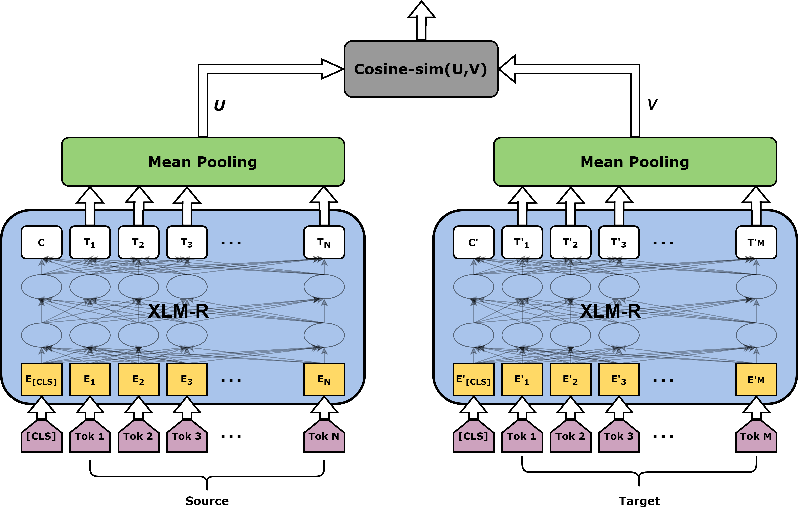

Sentence Level TransQuest Architectures
We have introduced two architectures for the sentence level QE in the TransQuest framework, both relies on the XLM-R transformer model.
Data Preparation
First read your data in to a pandas dataframe and format it so that it has three columns with headers text_a, text_b and labels. text_a is the source text, text_b is the target text and labels are the quality scores as in the following table.
| text_a | text_b | labels |
|---|---|---|
| නමුත් 1170 සිට 1270 දක්වා රජය පාලනය කරන ලද්දේ යුධ නායකයින් විසිනි. | But from 1170 to 1270 the government was controlled by warlords. | 0.8833 |
| ව්යංගයෙන් ගිවිසුමක් යනු කොන්දේසි වචනයෙන් විස්තර නොකරන ලද එක් අවස්ථාවකි. | A contract from the constitution is one of the occasions in which the term is not described. | 0.6667 |
Now, you can consider following architectures to build the QE model.
MonoTransQuest
The first architecture proposed uses a single XLM-R transformer model. The input of this model is a concatenation of the original sentence and its translation, separated by the [SEP] token. Then the output of the [CLS] token is passed through a softmax layer to reflect the quality scores.

Minimal Start for a MonoTransQuest Model
Initiate and train the model like in the following code. train_df and eval_df are the pandas dataframes prepared with the instructions in Data Preparation section.
1 2 3 4 5 6 7 8 9 | |
1 2 3 4 5 6 7 | |
SiameseTransQuest
The second approach proposed in this framework relies on a Siamese architecture where we feed the original text and the translation into two separate XLM-R transformer models.
Then the output of all the word embeddings goes through a mean pooling layer. After that we calculate the cosine similarity between the output of the pooling layers which reflects the quality of the translation.

Minimal Start for a SiameseTransQuest Model
Initiate and train the model like in the following code. train_df and eval_df are the pandas dataframes prepared with the instructions in Data Preparation section.
1 2 3 4 5 | |
1 2 3 4 5 6 | |
Predictions are the predicted quality scores.
Tip
Now that you know about the architectures in TransQuest, check how we can apply it in WMT QE shared tasks here.